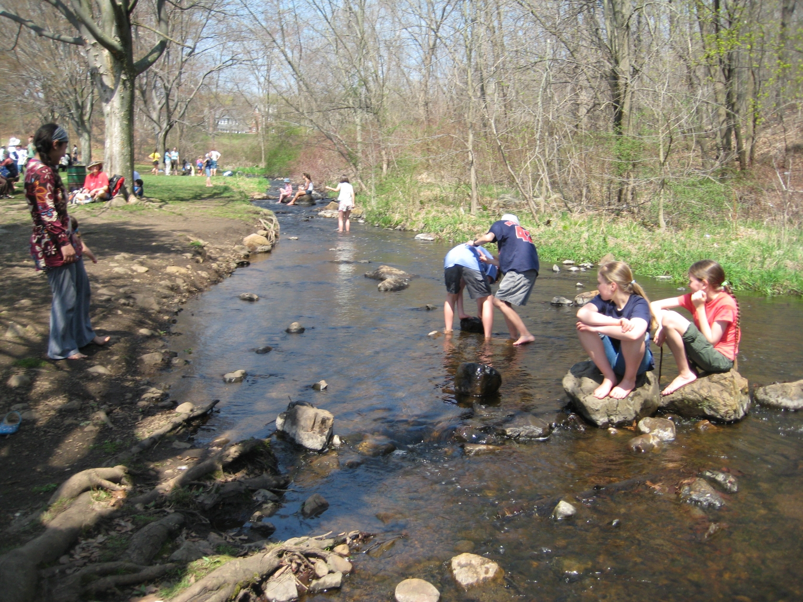

In Praise of Park Days
By Roberta Van Vlack
Park days have long been a staple of my family’s homeschooling life. With four kids, these informal, weekly gatherings have provided everyone (even mom) with an opportunity to make friends and socialize in a way that no co-op we found ever could. Park days were the one constant in our schedule from year to year. (My high school age daughter did the recorded version of Spanish 3 because the live class would have interfered with park day. One has to have priorities, you know.)
Park days are a melting pot. Homeschooling in Massachusetts attracts a pretty diverse group of people, and the families at our local park day have come from all different backgrounds and perspectives. I have seen the same scene countless times—kids of different genders and ages running around together. And not just running but playing organized games without any adult input. If you have doubts that homeschoolers can be properly socialized,
this is the place to go to put those doubts to rest. In my experience, homeschooling kids are incredibly patient and accepting of others who are different in any way. They are used to being with kids who don’t fit the usual mold.
If all that doesn’t convince you, how about this: park days are for parents too. You can post online all you want but nothing compares to getting together with other homeschooling parents for some actual mid-day adult conversation.
If your kids are nervous about their first park day, I would offer one piece of advice: Be patient. My observation would be that some children, perhaps especially those who have been in traditional schools, are slow to connect with others but they usually start to find their place once they have seen the same kids for a few weeks in a row. If nothing else works, bringing a new game, craft, or pet along to park day can be a real ice breaker. Our dog has always been a park day regular but I have seen birds and lizards and bunnies and guinea pigs come to park days too. (The dog was a little too interested in the guinea pig but it ended well.)
The sidebar has a list of some of the park days that happen in Massachusetts. If you can’t find one near you, you can check in with your Town Point Person (and if your town has no TPP yet, consider volunteering to be that person). You can also ask on the AHEM forum to find people close by who might want to get together, and create your own weekly gathering.